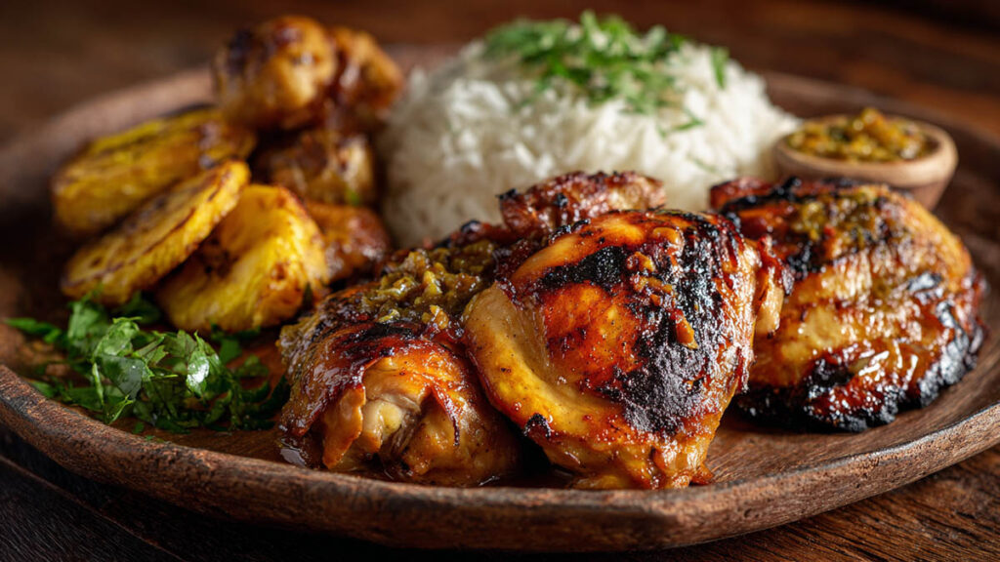

Les Boucanés
Incontournables de la table guyanaise, les boucanés sont des viandes ou des poissons fumés au goût intensément boisé. Ce mode de préparation unique provient du terme ancestral « boucan », qui désigne la grille en bois traditionnelle suspendue au-dessus d'un feu de bois.
Marinés avec soin avec de l'ail, du thym et des épices avant d'être fumés lentement pendant plusieurs heures, les boucanés de poulet ou de porc se distinguent par leur goût prononcé et leur caractère rustique.
L'histoire et le secret du Boucanage
Les boucanés sont des morceaux de viande ou de poisson qui ont été fumés selon une méthode traditionnelle appelée “boucanage”. Cette technique ancienne consiste à exposer les aliments à la fumée d’un feu de bois, généralement à basse température et pendant plusieurs heures, afin de leur donner un goût fumé très prononcé et une conservation plus longue.
Le boucanage est une méthode qui remonte à plusieurs siècles. Elle était utilisée à l’origine par les peuples autochtones des Caraïbes et d’Amérique, qui faisaient sécher et fumer la viande sur une grille en bois appelée “boucan” placée au-dessus d’un feu. La fumée permettait non seulement de parfumer la viande, mais aussi de la préserver plus longtemps, ce qui était essentiel avant l’avènement de la réfrigération.
Le processus de boucanage demande du temps, de la patience et un certain savoir-faire. Le choix du bois utilisé pour produire la fumée joue un rôle capital dans la signature gustative finale : certains bois donnent une fumée douce et parfumée, tandis que d’autres produisent une saveur mais plus brute et boisée.
Aujourd’hui, les boucanés sont particulièrement appréciés dans la cuisine guyanaise. Ils sont souvent incorporés dans des plats traditionnels, mijotés avec du riz, des haricots (pois) ou cuisinés en rougail pour apporter une puissance aromatique unique qui rappelle les méthodes de cuisine d’autrefois.